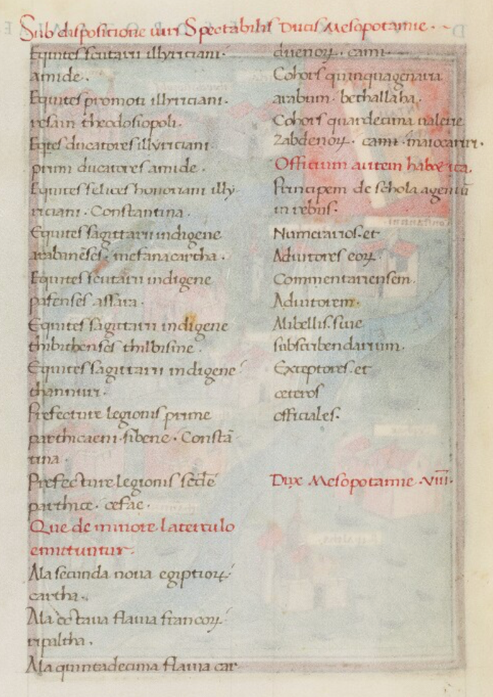

The Notitia Dignitatum
A compact representation of the late Roman administrative and military world.
A vast empire
At its greatest extent, under Trajan in the early second century, the Roman Empire stretched from the Atlantic to Mesopotamia. By around AD 400 it was smaller and under increasing pressure, but it still governed an immense territory across Europe, North Africa and the eastern Mediterranean.
There was no rapid long-distance communication. A message travelling from the western edge of the Empire to Rome, or from the Mesopotamian frontier to Constantinople, could take weeks and under difficult conditions much longer. Moving large quantities of information was harder still.
Yet taxes had to be collected, provinces administered, frontiers defended, troops supplied and officials given authority to act far from the imperial capitals.
A document from a world of expensive information
The Notitia Dignitatum was created in a world in which every document had to be written and copied by hand. Producing a long administrative text required writing material, skilled scribes and time. Sending a copy across the Empire required another physical journey.
This helps explain one of the most striking features of the Notitia: it is extraordinarily concise. It rarely explains what an office does or why a military unit is stationed in a particular place. Instead it gives names, titles, units and relationships in highly compressed form.
To a modern reader this can look incomplete. A Roman administrator who already understood the institutions could extract much more meaning from the same few words.
The manuscript and the transcription
The illustrated page gives a visual summary of the command of the Dux Mesopotamiae. The following manuscript page contains the compressed administrative text itself. The transcription beside it makes the structure easier to read while keeping the Latin wording visible.

XXXVI. Dux Mesopotamiae.
Sub dispositione viri spectibilis ducis Mesopotamiae:
Equites scutarii Illyriciani, Amidae.
Equites promoti Illyriciani, Resain - Theodosiopoli.
Equites ducatores Illyriciani, Amidae.
Equites felices Honoriani Illyriciani, Constantia.
Equites promoti indigenae, Apadna.
Equites promoti indigenae, Constantina.
Equites sagittarii indigenae Arabanenses, Mefana - Cartha.
Equites scutarii indigenae Pafenses, Assara.
Equites sagittarii indigenae Thibithenses, Thilbisme.
Equites sagittarii indigenae, Thannuri.
Praefectus legionis primae Parthicae Nisibenae, Constantina.
Praefectus legionis secundae Parthicae, Cefae.
Et quae de minore laterculo emittuntur:
Ala secunda nova Aegyptiorum, Cartha.
Ala octava Flavia Francorum, Ripaltha.
Ala quintadecima Flavia Carduenorum, Caini.
Cohors quinquagenaria Arabum, Bethallaha.
Cohors quartadecima Valeria Zabdenorum, Maiocariri.
Officium autem habet ita:
Principem de scola agentum in rebus.
Numerarios et adiutores eorum.
Commentariensem.
Adiutorem.
A libellis siue subscribendarium.
Exceptores et ceteros officiales.
Dux Mesopotamiae VIII.
Dux (military commander) of Mesopotamia
This is deliberately a broad reading aid rather than a critical translation. Formal unit names are often left partly in Latin where an English equivalent would imply more certainty than the source allows.
Under the authority of the distinguished Dux of Mesopotamia:
Illyrician Scutarii cavalry, at Amida.
Illyrician Promoti cavalry, at Resaina-Theodosiopolis.
Illyrician Ducatores cavalry, at Amida.
Honorian Felices Illyrician cavalry, at Constantia.
Native Promoti cavalry, at Apadna.
Native Promoti cavalry, at Constantina.
Native Arabanenses horse-archers, at Mefana-Cartha.
Native Pafenses Scutarii cavalry, at Assara.
Native Thibithenses horse-archers, at Thilbisme.
Native horse-archers, at Thannuri.
Prefect of the First Parthian Legion of Nisibis, at Constantina.
Prefect of the Second Parthian Legion, at Cephae.
And the units assigned from the lesser register:
Second New Ala of Egyptians, at Cartha.
Eighth Flavian Ala of Franks, at Ripaltha.
Fifteenth Flavian Ala of Cardueni, at Caini.
Five-hundred-strong cohort of Arabs, at Bethallaha.
Fourteenth Valerian cohort of Zabdeni, at Maiocariri.
His staff is as follows:
A chief drawn from the schola of the agentes in rebus.
Accountants and their assistants.
A records officer.
An assistant.
An officer for petitions, or a subscriptions clerk.
Clerks and the other members of the staff.
Dux of Mesopotamia, VIII.
How the document is organised
The Notitia is hierarchical. A heading can define the meaning of many lines that follow. An individual entry may only become fully intelligible when its superior command, province or administrative context is known.
Regional military commander.
Senior imperial or military official.
Commander or senior officer of a unit.
Common forms of Roman military unit.